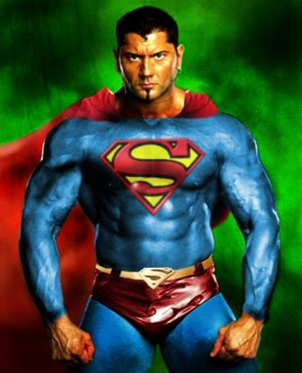
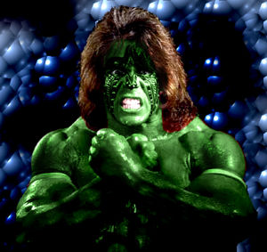

Anexo:Lista de luchadores de la WWE
 De: La Frikipedia, la enciclopedia extremadamente seria.
De: La Frikipedia, la enciclopedia extremadamente seria.
Aquí se encuentra el listado de luchadores de la WWE.
Actuales
- ¡Juan, Cena; que se te enfria la sopa!: El rapero,(padre del niño rapero de ¿Sabes más que un niño de primaria?) excampeón del pressing catch. Un día le ganó al Khalí (lo levanto, el tio). Su estilo de lucha se basa en que el contrario le haga la lucha enteramente hasta el final, para que el se encargue del final y le gane con un repertorio que da asco (moviendo el brazo tres veces). Su pérdida del cinturon se debió a que el mataviejos de Randy Orton le lesionó. Se dice que es como un Pokemon, que no puede aprender más de 4 movimientos.
- El enano: Tambien conocido como el monarca chaparro o leñador de bonsais. Es el ex-campeón del mundo, de raza pitufo. O pierde o tiene suerte. Su tecnica final "la 619" esta sacada del libro del kamasutra. ahora desde que batista lesiono a jhon cena al meterlo en una pokebola (recuerde que jhon cena solo sabe 4 movimientos como un pokemon), desde ese suceso el rey sera quien lo sustituya en la lucha contra por el campeonato, bueno almenos jhon sabra que lo esta reemplazando alguien que se curo justo cuando el se lesiono, que casualidad no?
- El Enterrador: Es el hermano de Jesús Vázquez y trata a sus contrincantes con aprecio y de forma hospitalaria. Cuando aparece siempre enciende el pabellón por eso le llaman el electricista. EX-Campeón de los pesos pesados y un icono del pressing catch. En unforgiven volvió de su lesión del triceps porque Leonardo Dantés pagó con él la caída de su discografía. Es un avaricioso que pretende hacerse siempre con el cinturon de campeón que retiene algún pardillete.
- bomba navarro. En medio combate suele agarrar la cuerda y moverla en señal de motivación excesiva; y en su presentacion siempre hace la metralleta, en la que imita una celebracion del pro evolution para poner cachondo a Hector del Mar y que , pensando que todos tenemos sus orientaciones sexuales diga: ¡tatatatatata ta; batista,batista, como te queremosssss,batista, mas,mas batista que nunca!!!!!!... ...pero luego de una ausencia de 4 años Batista regresa como el ganador del Royal Rumble 2014, lo que lo lleva a el evento principal de WrestleMania.
- Sheamus: un tipo de piel del color de esta página, con pelo pincho color zanahoria. Es un bruto que acaba de llegar y le gusta matar a Cena, a Triple H y al que se le ponga por delante. Se desconoce si es blanco o trasnparente.
- Hornswoggle: El enanillo verde de Finlay. Vive debajo del ring, donde se lo pasa de perra madre chingona. Antes se decía que era el hijo de Vince, pero luego se descubrió que lo que querían era humillarle, ya que era una farsa de su padre el del makelele (Finlay).
- Mark Henry: El hombre de acero, aunque más bien es el hombre de grasas negras, ya que en realidad es un bigardo negro superpesado. Es un gordo que hacía pareja con Big Daddy V y luego con MVP al que le gusta dar hostias a todo el que se le ponga por delante, excepto a los buenos como Undertaker, Batista o similaras, contra los que empieza ganando pero pierde al final. Campeón de la ECW, ni se sabe cómo lo consiguió, ya que los de polancovisión no emiten esa liga.
- El Gran Khali: El chico Punjabi (en español significa tocapelotas), venido desde la India, es un indio mastodóntico y gigantesco que gana a todos con una sola técnica, el exprimidor de cráneos. En realidad, no es que sólo le haga falta hacer eso para ganar, es que sólo sabe hacer cuatro técnicas. es el peor luchador de todos, gana a todos, pero solo les hace la exprimidora. Se cree que es hijo secreto del Fragasaurio y Leticia Sabater. Sus medidas son 3 metros de alto por 2 de ancho(al igual que Portugal).
- Big Show: O el fat show, debido a su peso. Es otro gigantesco pero combinado con superpesado, ya que además de alto es gordo. Fue uno de los mejores luchadores de la era Attitude, se retiro tras perder su titulo de ECW en la Elimination Chamber. Quería ser boxeador, pero volvió a SmackDown! en No Way Out 08 tras joder a Rey Mysterio (claro, abusan de él porque es pequeñito). Está calvorota ya que le crecen más deprisa sus kilos que el pelo. Era face, pero se volvió heel al atacar al Undertaker por la espalda cuando ayudaba a la jefa (lameculos...)
- Goldust: Un individuo sumamente extraño, más o menos parecido a Boogeyman, solo que dorado y negro en vez de rojo y negro. Es un colgao mazo raro, ya que se desconoce su sexo, debido a que entra siempre con peluca, abrigo y sujetador de relleno (perdón, con eso último no).
- Santino Marella aka Santina Marella: Es un tipejo que se hace pasar por italiano, pero que realmente es de lepe. Aparte de cagarla siempre le gusta vestirse de mujer; de hecho, creemos que Santino puede ser este tipo.
- Joey Mercury: amigo de Nitro, este individuo era exactamente igual que él. Pero cuando Nitro pasó a llamarse Morrison, el desconsolado Mercury se fue de la empresa y se tiró por un barranco. Pero años después ha regresado, y fue el esbirro de CM Punk, llevando la misma máscara, si bien no dicen ni su nombre.
- The Miz: Luchador con sombrero; se le ocurrió ese nombre un día que comía sopa de letras. Se fue a la desconocida ECW (desconocida aquí en Aspaña). Era compañero de su novio el guaperas y se fue a raw.
- Randy Orton: (randy = cachondo, orton = culazo | Randy Orton = Culazo Cachondo). El asesino de leyendas y ex-campeón de la WWE. Tiene un hermano siames que es un elefante; ahora se esta ganando la vida haciendo peliculas de Disney. Tambien se le conoce como el mataviejos, ya que se le va la pinza y se dedica a matar a viejunos como a The American Dream y al padre de John Cena, consiguiendo así ser el heel más odiado. Tambien se dedica a cargarse a no tan viejunos normalemente porvocandoles conmocion cereblar (HBK,RVD). Su Finiser es el RKO. Lesionado gracias a un martillaso de HHH. A vr si ahora escarmienta de sus actos (aunque siendo asi, no creo).
- Kane: Luchador aspañol que nació en una base militar americana procedente de Espiña. Supuesto hermano del Enterrador, un dia le prendio fuego a su casa matando a sus padres y quemandose la cara, pero al parecer le cojio el gustillo a pegar mecherazos. LLevaba mascara pero se hizo una operacion de cirugia estetica aunque en el fondo sigue siendo igual de feo y tiene un ojo diferente al otro. Es famoso por haberle quemado el culo a MVP. En el Smackdown VS Raw 2008, en las pantallas de cargando, los españoles no quisieron que supieran que semejante fiera fuera de su pais y, a consecuencia, le pusieron "Origen: desconocido".
- Vince McMahon: El jefe. Es un tio con mu mala ostia que le quito el cinturón a Bobby Lashley y ahora se le descubrió que tiene un hijo secreto, que finalmente era Hornswoggle, el duendecillo verde de Finlay (este hijo es, en realidad, de Finlay).
- Evan Bourne o Matt Sydal: El ídolo de los frikis de internet, o sea, los que ven Ring of Honor o alguna mierda como esa. Discípulo de Tao Pai Pai, este tipo es famoso por solo hacer movimientos prohibidos y poner cara de que le estén matando cuando le dan un golpecito de nada.
- Dolph Ziggler: un rubio de bote que entra todo presumido y vacilando a todo el mundo. Se enfrentó a John Morrison por un cinturón nada menos que 140.896 veces, consiguiéndolo 0 de ellas.
- Drew McIntyre: el tío más normal del mundo, es decir, no destaca en nada. Dice que es "El Elegido", aunque no sabemos de qué, y le gusta pegarle a Teddy Long por orden de Mr.McMahon.
- Rob Van Dam: cuarenton que estuvo en mierdas como WCW,ECW,TNA y WWE. Fue el luchador mas extremo de la empresa (hasta que vino Cena) y su carrera se fue a la mierda después de su relación amorosa con Batista.
Los que ya se fueron y nunca volverán (qué tiempos, ¿eh?)
 Aquí llega... ¡Super Batista!
- Jeff Hardy: drogata de altos vuelos, hermano de Matt. Debido a sus drogas, decidió irse a TNA.
- Matt Hardy: famoso hermano de Jeff, más famoso que él. Luchador trágico, Matt se enfadó con su hermano y, cuando parecía que iban a formar equipo, Jeff se piró de la WWE, dejando a Matt triste y desampaardo, sin nadie al que odiar.Actualmente en Ring of Honor.
- Edge: El mejor oportunista de todos, se cree guaperas, pero solo es un chulito de cara. Esta como una cabra y tuvo una novia, Lita que también fue luchadora (Diva) que le puso los cuernos al luchador Aspañol Kane. Suele fardar de novia en el ring (incluso se la tiró en directo en una cama preparada) y traicionar a sus compañeros. Tras su lesión, mantiene un dulce romance con la gerenta de Smackdown, Vickie Guerrero (su esposa). Perdió el título contra CM Punk, ya que Batista le jodió sus cataplines, lo cuál aprovechó el punky. Hasta hace poco pasaba los días debajo del ring jugando a las cartas con Hornswoggle pero su novia la foca le puso el titulo a huevo para que volviera. Una semana después la perdió con Jeff Hardy con el que habia estado fumando unos porros antes del combate. Claro, Jeff como está acostumbrado ni lo notó pero a edge ya se le notaba algo raro.Actualmente esta retirado porque el muy imbecil se lastimo y ya no puede luchar.
- Chavo Guerrero: Sobrinete de Eddie Guerrero. Fue en su tiempo el campeón de los pesos crucero (los chiquitines) pero que dejó de existir. Fue durante un tiempo acompañado de guardaespaldas, ya que no se fiaba ni un pelo de Rey Mysterio. Desgraciadamente para él, es una mierdapinchada en un palo, ya que le gana cualquiera y hace más el ridículo que Santino Marella. Actualmente TNA.
- Chris Jericho: El mesias de la WWE. Tras dos años, ha vuelto a Raw a salvarnos del demonio (Randy Orton), aunque un pecadorrllll (JBL) le fustró su plan para dominar Raw. Es un tipejo rubio con flequillo de punta que siempre entra con traje y micro a llamar hipócritas a los del público, y luego entra alguien y le pega. Le dejó el ojo morado a Pocholo Michaels, y hace poco estaba con Big Show.Actualmente en su propia banda Fozzy.
- CM Punk: Apenas se le conoce, ya que estaba en la ECW. Ahora se fué a RAW, y se convirtió el campeón de los pesos pesados (lo consiguió venciendo a Edge "con sus propios méritos"). Usa de dibujo para su nombre el logotipo de Pepsi. Actualmente está rapao y lleva máscara
por lo feo que es por estar calvo y creó la estrait ex societi, una panda de maricas follamesas que no sirve para nada.Pero el (Cm Punk) abandona la WWE luego de que dejen su personaje sin rumbo y no tengan planes estelares para él.
- Jodio Bobo con Lorzas o mejor dicho,... Frustraplanes!!: El luchador que fue expulsado por gord... por ser demasiado bueno. Fue comentarista de Smackdown debido a un enchufe misterioso con mi tio, que es limpiador del despacho del jefe de Hacendado, primo segundo de la abuela del director de la WWE, aunque ahora ha vuelto a luchar en RAW. Tuvo gran rivalidad con Juan Cena, debido a que él presume más de coches que de técnicas, lo cuál le enoja a él y a su flamante limusina con cuernos.Y El Enano MariC* n Lo dejo Fuera en WWM 25
- Sin Cara: uno que de pequeño veía mucho a Rey Mysterio y quiso ser como él,así que se puso una
bolsa de basura máscara y se fue a la mierda la WWE pero fue despedido de la WWE por sus constantes lesiones y demás problemas, el afirmo que demandara a la empresa por los derechos del personaje.
- Bryan Hastings: Luchador inexistente creado del juego de Pressing Catch para play 3. Por tanto, el mejor, digan lo que digan esa panda de hipócritas (frase de Chris Jericho o Jericó o Gerikó o como coño se llame).
- Chris Master of Puppets: Conocido como el Masterpiece debido a que se hizo una cirugía estética con maquillaje de marca MaxFactor. En realidad no es más que un paquete al que le dan una paliza hasta que agarra al rival por atrás en algo llamado Masterlock que tiene un efecto fulminante en el rival, ya que empieza a morirse hasta que se rinde. Después de estar en la NWE (la que ponían en La Sexta), donde cambió de apellido y de nombre de finisher, ha vuelto a la WWE, donde es conocido por bailar con los pectorales, pero luego fue despedido otra vez.Actualmente no se sabe.
- Finlay: El inventor del Makelele "Que Cuando te Pega te da el Telele". "Finlay no lee el periódico, lo estudia". Nacio en Belfast, y no le gusta que nadie le toque la gaita. Le encanta pelear.Actualmente Retirado
- Booker T: El inventor de la cerveza sin alcohol, actualmente traspasado a la TNA. En su tiempo fue el rey del ring. Descubrió que peinarse con un ventilador era muy práctico y por eso le llaman "El Hombre que se Peina a Soplidos". Tambien se le conoce como "Booker King" por su aficion a las hamburguesas. Expulsado de la WWE
por tener un rabo de dos metros (más quisiera él) por portarse mal.
- Daniel Austin, el hijo de Stone Cold Steve Austin: Es el fastidioso luchador que tuvo pajas con Triple H por el romance de la hija del jefe, anteriormente era rubio con una esposa llamada Sable con pantalones de cuero y es el ultimo lider de "The Oddities" hasta que le ganó el perra de The Rock en el PPV Porno de Summerslam 99´ y despues le tiñó el pelo de negro a Daniel, actualmente fue follado por Mick Foley por que ese gilipollas loco barbudo se enamoró de el, fue un año GM de RAW porque la esposa del jefe lo ascendío de Luchador a Jefe de RAW, pero como perdío el campeonato ante Batista ya se volvío de jefe de RAW a Luchador Bailarin, tiene una amante de españa llamada Teodora Villavicencio, le hicieron un doble en una pelicula mexicana-boliviana llamado Nando San Juan de la Pelicula "La Leyenda de la prostituta Rana-huala".
- Jim "Estaca" Duggan : Es un tio que lleva casi 20 años dale que te pego, sigue en RAW,aunque a sus casi 60 tacos, pelea poco. Hay que tener cuidado con es tipo pues siempe va con una estaca al hombro de 25kg, me diras tu como te pegue eso lo que te hace,aunque es buena gente nadie se a salvado de sus ostias desde Ric Flair hasta pocholo y eso pasa por tocarle el cojon izquierdo, suele entrar con una bandera de usa y gritando eooooooohhhhhhhhhhh,su ultima aparicion fue con los canis,intentando comprar "polvos magicos" para volver a ser unos de los grandes, porque el chupa escrotos de Chris Jericho no queria pelear con el, porque era un viejo y estaba acabado.
- AJ Styles : Luchador ahora de la TNA (casi desconocida en Aria giovanniy no quedo cachondo. Ahora esta de castaño oscuro con Kurt Angle porque su mujer le pone los cuernos con el AJ.
- The Boogeyman: el luchador de la tribu Masai, que come gusanos porque está a dieta. Es un colgao pintarrajeado de rojo y negro que lleva un garrote y un reloj de medio metro. Es el primo hermano del malo de Star Wars 1 (el que muere partido por la mitad). Enemigo de Finlay, no sale nunca, ya que está en la ECW, y como ya sabeis, los de Cuatro no piensan traer el jodio programa.
- MVP: El luchador mejor pagado de la historia del pressing catch. Era un paquete hasta que hace cuatro dias gano un cinturon a un lesionao llamado Chris Benoit (actualmente muerto). A pesar de to eso el chaval tiene futuro. Fue encontrado en el mismo getto de raperos marginales en el que encontraron al niño rapero de ¿Sabes más que un niño de primaria?.
- Bobby Lashley: El Superman moreno y el enemigo del rey... del ring. Una vez ganó él, pero otra vez ganó Booker. De pequeño se comió un perchero y desde entonces tiene una espalda un pelin rara. Hace poco el jefazo Vince Mcmahon le dio una paliza con 300 tios (¿o eran espartanos?) y le arrebato el cinturon de campeon de ECW. Actualmente le hizo al trenecito a Vince sin vaselina, este último se cabreó y lo echó de WWE, ahora está inactivo.
- Viscera o Big Daddy V: Primo segundo del cuñao de Mark Henry, aunque le supera en grasa, lorzas y michelos de espanto, ademas de pectorales blandurros. Es otro superpesado descomunal, que primero era un gay y luego un maloso con tirantes, que hacía pareja con Mark Henry. Su tecnica favorita es la de pasar por encima de alguien. Se le conoce en las farmacias como el Ilustre Adelgazador. Actualmente se ha largado de la WWE, y está en empresas que no los conoce ni su director.
- Mr. Kennedy: No confundir con Mr.Cámara. Es uno de los luchadores con mas futuro en la empresa, gano el Money In the Bank en Wrestlemania 23, pero este se lesionó justo cuando se le iva a dar un importante empujón a su carrera, y tuvo que ceder el maletin a Edge. Siempre que entra a pelear baja un micro del techo y vocifera su nombre como si fuese un tipo importante. El caso es que se lesionó tanto tiempo que cuando volvió de la lesión se fue de la empresa.
- Funaki a.k.a. Kung Fu Naki: Uno de los mejores luchadores de todo el jodio wrestling, ya que, al ser japones, no entienden lo que dicen sus sobornadores; por ese motivo siempre pierde, pero en realidad es incluso más fuerte que el Khali. Está en SmackDown!, pero sale poco debido a que solo lo usan pa fastidiar a su contrincante. Que aprendan los demás pardillos de él.
- Simon Dean: Un pringao que llevaba un traje púrpura y que decía ser dietista o algo así. El caso es que este hombre no ganaba ni disgustos, excepto una ocasión que trajo a dos gemelos bigardos a pegarles a los Vitamínicos.
- Carlito: El rompepeines. Nacio en Cuba y peleo en sus inicios con el Che. Ahora presenta un programa llamado la cabaña de carlito en el ke se va con sus amigos de botellón a una chabola con palmeras. Las veces que gana (1 entre un millón y con trampas) coge una manzana, mastica y le escupe al adversario. Intenta camelarse a Maria, la novia del italiano.
- Umaga: el bulldozer samoano, ni te atrevas a robarle la merienda, porque un día su madre adoptiva le quiso poner a régimen y desde aquel día está muy enfadado. Aparte, es un gay, ya que te tira contra la esquina y corre hacia ti para que lamas su enorme culo.
- Rikishi: hermano de Umaga, este samoano tenía un ténica de victoria que consistía en hacer que le chuparas el culo en el rincón del ring. Aliado con dos raperos llamados Too Cool, Rikishi no valía más que para darse palos con Stone Cold.
- Shawn Michaels: Hermano gemelo de pocholo. Lleva peleando desde el año de maricastaña, y siempre le pega una patada en la cara a su compañero cuando se cansa de él. Su finisher es la superpatada (se dice que es un tributo a la patada giratoria de Ryu Street Fighter, pero vamos es una copia muy mala), una de las 10 cosas de la vida que teme Randy Orton; o en inglés se dice Sweet Chin Music (Suit-chin miusic en español) que significa, obviamente, chino de caramelo cantando. Derroto a Flair en Wrestlecagazo 24... el viejote se despidio de la lucha. Era un buen octagenario. Actualmente no se sabe si seguirá en el wrestling, ya que Jericho le jodió too el ojo.Actualmente Undertaker lo retiro.
- Ric Flair: Un notas de la kinta de Chiquito de la calzada, (incluso lo imita), que se dedica a salir al ring con una bata de su abuela y a recibir ostias del gran khali. Siempre dice que se va a retirar en su prósimo combate. Y así fue...! derrotado por "Pocholo" Michaels en Wrestlemania 24.
- Mankind / Mick Foley / Dude Love / Cactus Jack: El luchador mas loco entre los locos. Pasó por las ligas rusas de wrestling (allí las hostias que se pegan son de verdad). Es casi casi venerado entre el público y siempre que lucha termina con su cara ensangrentada, o con quemaduras de tercer grado. Actualmente en la TNA.
- Eddie Guerrero: Tío de Chavo Guerrero, nadie le ponia atención hasta que ganó (de suerte) el campeonato y de repente murió. Por lo tanto es una leyenda de la lucha libre.
- Chris Benoit (el innombrable): Enano cuadrao con la cabeza muy dura maestro de los candados y el suplex, pero su tecnica favorita es dar cabezazos desde la tercera cuerda. Sus amigos lo llaman "popeye". Actualmente muerto.
- The Rock: El famoso actor de cine, antes uno de los mejores luchadores de la era Attitude. Mantuvo grandes feudos con Mankind y con Stone Cold. Actualmente los fans y superestrellas lo buscan para matarle por sus declaraciones en los premios Oscar (donde afirmó pasárselo más de puta madre actuando en comedias cutres que haciéndose hostiar por el bueno de Stone Cold).
- Stone Cold Steve Austin, padre de Daniel: Un calvo con perilla y muy mala leche que nada mas entrar se rompe dos latas de cerveza en la cabeza. Por otra parte fue uno de los grandes luchadores de la historia del wrestling.
Equipos
- Jerishow: Como su nombre dice, Jeri por Jericho y Show por Fat Show. Cuando estos dos se aliaron, ganaron cuatro cinturones y se enfadaron con MVP y Marcos Enrique, pero los perdieron al final contra D-Generation X. Como Show y Jeri estaban todo el día enfadados entre sí, dejaron el grupo y Show se fue con The Miz, que era un dúo hasta mejor llamado ShoMiz.
- World Strongest Tag Team: está compuesto por MVP y el gorila de chocolate Marcos Enrique. Cuando este equipo salía al ring, primero entraba Mark hasta que recibía una paliza y entraba MVP, que recibía otra y entonces entraba de nuevo Mark, que tiraba del ring a to' el mundo y dejaba a MVP hacerle el Playmaker al que quedaba. Ya no hacen equipo, después de algo llamado Draft o algo así.
- Los Hermanos Hardy: Son 2 y cada uno en una liga diferente para
dar por culo que no se lien a hostias peleen ya que ultimamente se "quieren mucho", tienen mucha drogadicción imaginación para sus movimientos... como el poetry in mouchion (poesia en noseque) en el que Matt Nubenegra se pone a cuatro patas ya que tiene mucha experiencia y Jeff va corriendo (no, no le da por ahi) lo utiliza de trampolin para darle al otro una caricia hostion y lo deja ahi ahi
- D-Generation X: Lo forman pocholo y Triple H. También llamados D-Generados, en sus presentaciones, en las películas, aparecen tias, culos, pechos y demás (Hasta una follando con una mesa!) Se chulean como si estuvieran masturbando un nabo tan ancho como el tronco de un árbol.
- Jesse & Festus: para los que no se han enterado, eran Jesse (un tío bajo y con pelo largo rubio con pinta de tía) y Festus (un mongolo calvo de tamaño descomunal). Su método de ganar combates era simple: al sonar la campana el Festus dejaba de ser retrasado mental, le daba el telele pero bien y le arreaba una paliza a los oponentes. Luego entra el pequeñajo Jesse, que aunque es ágil le sacuden duro y lo dejan en el suelo; pero al final, Festus agarra a Jesse y lo tira p' arriba hasta que toque el techo del estadio y caiga como Jeff Hardy sobre el rival y le haga la cuenta. Aunque estos tíos caían simpáticos, se separaron y ahora el Jesse es rapero y Festus es guardaespaldas de CM Pink.
- Deuce N' Domino o Los Travoltas: Son Deuce y Domino, dos rockeros con chupas de cuero, tupés y tal, que van siempre acompañados de la patinadora Cherry, que es una cursilona que una vez le dio una torta en toa la cara a Finlay. Debían ser millonarios, ya que cada día entraban co un coche diferente. Se disolvieron cuando uno se fue y otro se fue con(tra) Randy Orton.
- Travoltas. Les acompaña la rubia Ashley que fue hace nada portada de playboy y tiene dos tetas como dos carretas. Actualmente este grupo está en empresas de esas que sólo se ven en canales regionales.
- Cryme Time : Esta gente que son una copia exacta de los canis solo que en negro y mucho mas cuadrados. No hacen mas que robar y pasar todo el material de la wwe, sus mejores clientes son triple nariz y bultista. El caso es que son un equipo como otro cualquiera respecto a la técnica: primero entra el negro alto, que se lleva una paliza hasta que le da el relevo al negro enano, que cuando parece que le van a dar una patada en los cojones hace un giro raro saltando, medio RKO medio Rock Bottom, y le hace la cuenta al otro.
- Rated RKO Es el grupo de los mas
pendejos bocazas de la wwe Edge Y Randy Orton los cuales atacaron sin razon a Shawn Michaels mientras pajeaba leia en los vestuarios, este tag termino cuando Orton le dio con el titulo en la puta madre cara a edge, y luego se fueron con JBL y Chavo Guerrero
- The Shield: Grupo conocido por ser creado para ser la mayor copia existente sobre el planeta
Los míticos (etapa Telencinquil)
Los pocos datos que existen se debe a que los locutores no sabian ingles y decian lo que se les ponía. Además, la WWE se llamaba WWF por entonces. La higiene escaseaba. Mayoritatiamente alcoholicos. Tendencias homosexuales. No pisaban el gimnasio y tenian unas lorzas majas. No se requería ni leer ni escribir.
- Hulk Hogan: Abuelete que ahora se dedica a presentar una patetica parodia del programa Gran Prix llamao Gladiadores siglo XXI.
- Andre el Gigante: Es un gigante mamón con cara del diablo pero con ojos chiquitos y cachetes gigantes, con peinado con rulos, otro rival de Hulk Hogan, puede levantar hasta 6 personas con sus dos brazos, siempre se caga en las tinas porque encuentra que los retretes son más pequeñas que tazas de té, incluso es más grande que Big Show y el Gran Khali.
- Los Sacamantecas: Dos tios vestidos de militar, al estilo oso gay, que se anunciaban levantando los sobacos.
 Así era Último Guerrero cuando le daba el telele.
- Ultimate Warrior: Rival a muerte de Hulk Hogan. Vestia botas, calzoncillos y unos pompones en los brazos como los que llevan los niños americanos en el manillar de la bici. Cuando iba a perder recurría al BAILE DE SAN VITO. Le daba un telele y entonces era inmune a todo tipo de ataques.
- Legion of doom: dos tios osos gay (pressing catch de los 80/90 era enteramente gay) con armaduras con unos pinchos tremendos hechas de Poli-Spam.
- Los Rockeros: íconos gay de la época. Se caracterizaban por sus muy homosexuales pintas y actitudes en el ring. Lo conformaban Shawn Michaels y un tal Marty Janetty que como es obvio fue traicionado por el primero en un salón de belleza que frecuentaban.
- Terremoto Earthquake: Luchador barrilete de más de 200 kilos cuyo movimiento final era pegar saltos y brincos alrededor del pobre rival provocando que todo el pabellón temblase (con la intención de desmoronarlo y que la WWF cobrase el seguro), impulsarse con las cuerdas y caer de culo sobre su cara. Llevaba siempre un traje azul que le hacía gordo (¿o no sería el traje?) Era enemigo de Hulk Hogan y del Marinero Tarugo.
- El Marinero Tarugo: Otro barrilete igual de gordo que el anterior. Llevaba un traje de marinero estilo Popeye, aunque salta a la vista que si este tipo sube a un barco lo hunde por el peso. Aunque al principio estaba con Hulk Hogan contra el barrilete Terremoto, luego se unió a él y empezó a llevar un traje parecido, haciendo las mismas salvajadas para demoler el estadio a base de saltos.
- Los Oddities: Otro equipo antiguo de la época del anterior pero con la diferencia de que los combates con estos eran el descojone padre. Eran unos chalaos que iban de estilo monstruo de feria: dos payasos, una diva gorda y fea, el gigante Silva (sí, otro tío tan alto como el Gran Khali), y un bailarín de chachachá que trabajó en 300. Siempre hacían el gilipollas en los combates, pero caían bien y eran unos máquinas peleando, excepto cuando perdían por cualquier minucia, Daniel Austin fue el ultimo lider de este grupo en un House Show hasta que perdío ante The Rock en Summerslam ´99.
- Nation of Domination: Latin Kings con negros entre ellos. Eran unos tíos con mala leche que atacaban a D-Generation X. Estaban en él Kama Mustafá, otro aún más raro llamado Farooq, y un tal D-lo. No sé por qué no ganaban contra los D-Generaos si son cinco contra dos. Hace mucho que se disolvieron por culpa de Daniel Austin por perder ante Stone Cold.
- Los Teletubbis: Luchadores homosexuales que con sus bolsos y mariconerías ganaban los combates porque los demás luchadores se morían de la risa (Así fue la muerte de Eddie Guarrero) pero Daniel Austin fue una vez desconocidamente miembro de ese grupo.
 Lucha Libre Lucha Libre 
|
 Luchadores Luchadores 
 Empresas Empresas
 Estilos de Lucha Estilos de Lucha
 Otros Otros
|
Autor(es):
- Taruntela
- Veni Vidi Vici
- Kevrochi
- Duni valde
- Sygma
- SuperTararot
- Randy Pendejorton
- SecondCitySaint
- Genericool
- Putin
Frikipedia 2005-2016, Licencia
GFDL 1.2 - Extraído por FrikiLeaks